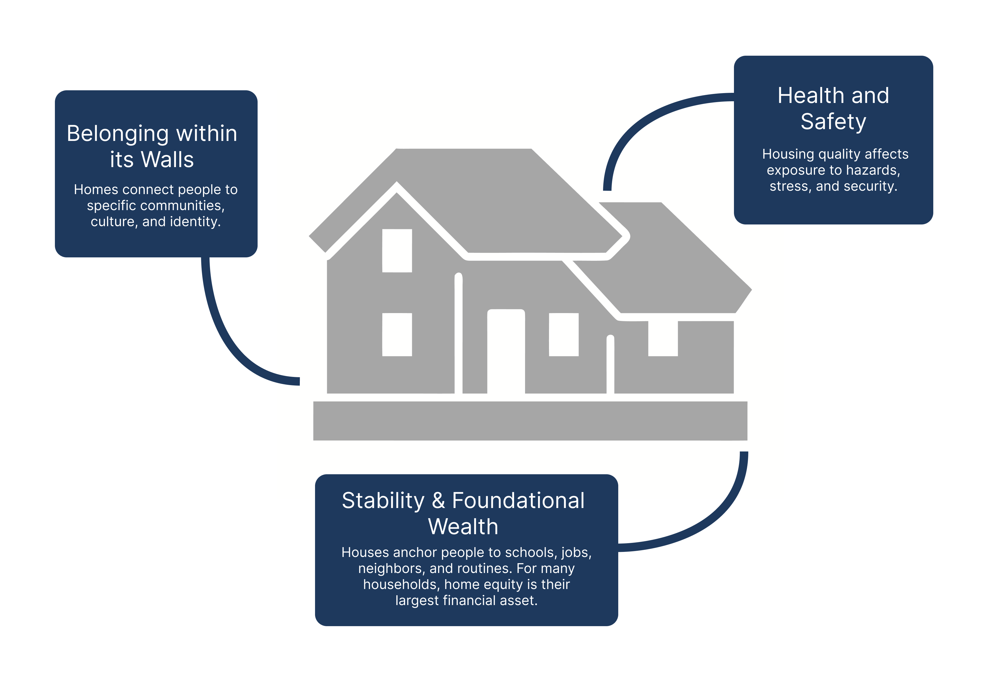
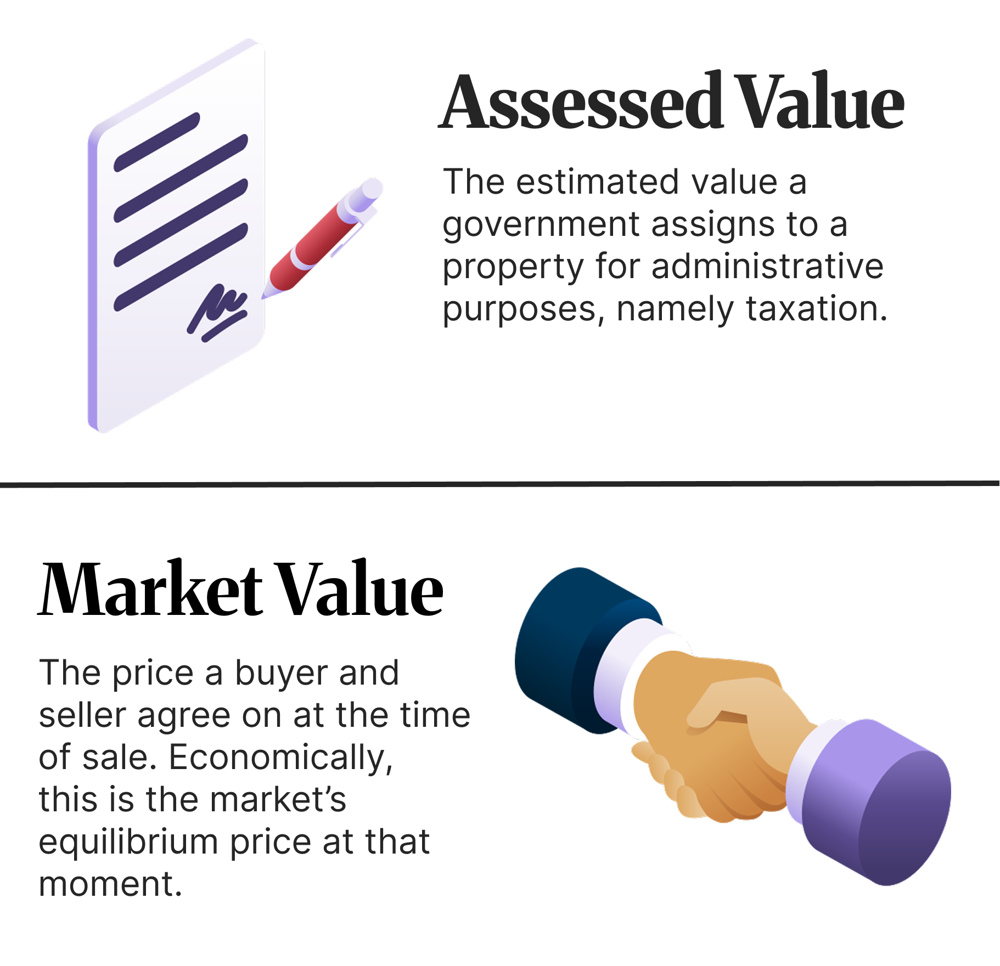
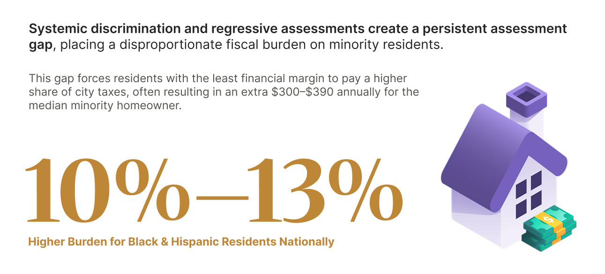

The Hidden Cost of Home Ownership
How Philadelphia's property tax system values some neighborhoods differently than others
A home holds many kinds of value at once. It's safety. It's community. It's financial security.

In economic terms, however, it's how much you paid for it.
In practice the value of a house is measured as a dollar price, and different agents take different measurements. Two of the most important are:
Sale prices reflect what the market was willing to pay at a specific time; they change with appreciation, neighborhood shifts, and broader economic trends.
Assessed values are meant to track changes in price over time and provide a stable basis for property taxes. When these two numbers drift apart, especially in systematic ways, it can create unequal tax burdens.

Assessment standards like those from the International Association of Assessing Officers (IAAO) define what fair looks like. Assessments should be:
When all three hold, property taxes are a neutral reflection of value. Fair assessments matter because property taxes fund schools, services, and infrastructure. When assessments are biased or uneven, they distort who carries the cost of the city. As the data shows, that unevenness is rarely random.

Philadelphia earned the nickname "City of Homes" in the 19th century because its unique rowhouse culture made it have one of the highest rates of homeownership in the US.
The lines on this map are census tracts: small, relatively permanent, geographic subdivisions of a county, containing between 1,200 to 8,000 people. They are mapped to be homogeneous with respect to population characteristics, economic status, and living conditions.
These two maps tell a consistent story: in Philadelphia, where you live, your income, and your race are closely linked. And as we'll see, so is how your home gets assessed.
Tracts can be useful for visualizing demographics like income:
Or the racial majority of a population in a specific area:
In 2024, a Reinvestment Fund brief examined how changes to Philadelphia's property tax regime affected different communities.
The findings raised concerns that assessment practices might be reinforcing existing inequalities.
When we plot the assessed value against sale price for each tract, colored by racial majority, a clear pattern appears: the gap runs in opposite directions depending on who lives there.
In majority-White tracts, assessed values tend to fall below sale prices, so homeowners are paying taxes on less than their home is worth. In majority-Black tracts, it's the opposite, assessed values tend to exceed sale prices, so homeowners are taxed on more than their home is worth.
When Philadelphia assesses a property, it estimates what that property is worth — this is the assessed value. The assessment ratio compares that estimate to what the property actually sold for:
Accurate Assessment: A ratio of 1.0 means the city assessed the property at exactly its market value, a perfectly accurate assessment.
Under-assessment: A ratio below 1.0 means the property was underassessed; the city thinks it's worth less than buyers actually paid.
Over-assessment: A ratio above 1.0 means the property was over-assessed, the city thinks it's worth more than buyers paid.
This matters because property taxes are based on assessed value. Homeowners in over-assessed properties pay more in taxes relative to their home's actual market value, a hidden financial burden that, as the chart below shows, falls disproportionately on Black and Hispanic neighborhoods in Philadelphia.
The gaps aren't scattered randomly. They cluster: majority-Black and Hispanic tracts consistently show higher assessment ratios, and majority-White tracts consistently show lower ones.
In 2019, a citywide change in assessment methodology sought to recalibrate property values, resulting in a notable convergence of assessment ratios across racial groups. However, the 2023 reassessment reversed that progress. Assessments rose an average of 31% citywide, but that increase was far from uniform: ratios surged to 97% in North Philadelphia East and 73% in North Philadelphia West, compared to just 5% in Center City, indicating that assessments are once again outpacing market values in majority-Black and majority-Hispanic communities.
The data is clear: Philadelphia's current assessment methodology functions as a regressive tax. While property taxes are intended to be a neutral reflection of market value, the persistent gap creates a reality where those with the least housing wealth, disproportionately Black and Hispanic homeowners, subsidize the city services of those with the most.
When a home in a majority-White tract is under-assessed, that family gains a hidden dividend. When a home in a majority-Black tract is over-assessed, that family faces a hidden penalty. To truly be a City of Homes, Philadelphia must ensure that its measurement of value does not reinforce the very racial and economic disparities it seeks to overcome.
Philadelphia has demonstrated that before that it can make the assessment process more equitable. The 2019 reassessment brought ratios closer together across racial groups, showing that fairer outcomes can be reached. What the data calls for now is continued commitment to independent review of assessment practices, transparent public data, and a methodology that is regularly checked for the kinds of disparities this analysis reveals.